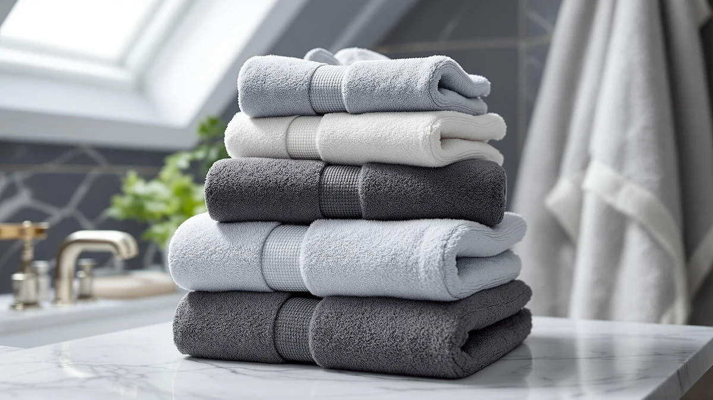

The Best Plush Bath Towels (2026)
Prices and picks verified as of September 2026. Independent, reader-supported reviews.


Quick Answer
We compared seven plush bath towel sets on cotton weight, absorbency, and verified owner reviews. The Utopia Towels 8 Piece Majestic is the best plush bath towel set for most households, with the Peryiter 6 Pcs Mr and Mrs and the REDKISS 6-Piece Set as strong alternatives for couples and budget shoppers.
Our pick: Utopia Towels 8 Piece Majestic — $39.99 Check Price on Amazon
Bottom line: our top pick is the Utopia Towels 8 Piece Majestic Plush Luxury Towel Set at $39.99. The best budget option is the Soft Robe For Women，Warm Plush Bath Robes Female，Spa Towel at $19.99.
Things to Know Before You Buy
- GSM weight is the plushness number that matters. Bath towels in the 500 to 700 GSM range read as plush without becoming difficult to dry between uses. Below 400 GSM, a towel feels thin no matter what the marketing copy says.
- Cotton type changes how a towel feels more than price does. Ring-spun and combed cotton, like the yarn Utopia Towels uses across its sets in this guide, has fewer loose fibers and a softer hand than standard carded cotton at a similar price.
- Set size is a math problem, not a marketing number. An 8-piece set usually breaks down into 2 bath towels, 2 hand towels, and 4 washcloths, not 8 full bath towels. Check the piece breakdown before comparing price per set.
- Plush and quick-drying pull in opposite directions. Denser cotton absorbs more water and feels heavier on skin, but it also holds moisture longer between washes. If you share one bathroom with limited air flow, a slightly lighter towel may serve you better day to day.
- Price per towel beats price per set for comparing value. A $42.99 six-piece set and a $23.93 six-piece set are not the same value once you divide by the piece count and compare the material specs side by side.
The best plush bath towels turn an ordinary five-minute routine into the softest part of your day, and after comparing cotton weight, absorbency claims, and verified owner ratings across dozens of listings, seven towel sets stood out enough to include here. We looked at full matching sets rather than single towels, since most households replace their bathroom linens as a set and price per towel tells a clearer story than price per package.
Our top pick is the Utopia Towels 8 Piece Majestic at $39.99. It is 100% cotton, covers a full household with bath towels, hand towels, and washcloths in one purchase, and Utopia's ring-spun cotton consistently earns higher owner satisfaction than the carded cotton used in cheaper competing sets. If you only need a smaller set or want a coordinated look for two people, the Peryiter 6 Pcs Mr and Mrs set and the Utopia Towels 4 Pack Premium both make strong cases below.
We also included a few towels that solve a narrower problem well. The Kitsch XL Microfiber Hair Towel is not a bath towel replacement, but it dries hair faster than any cotton towel and pairs naturally with a plush set. Budget shoppers should look at the REDKISS 6-Piece Bath Towel Set at $21.59, which delivers six towels at a lower price than most four-piece cotton sets. Every pick below lists real specs, honest drawbacks, and the price we found at the time of publishing, but if you read nothing else, the Utopia Towels 8 Piece Majestic is the best plush bath towel set for most people.
Why You Should Trust Us
Ilane Tall covers bath and bedroom textiles across this network of home-goods sites, focusing on how material specs like GSM weight and cotton type translate into everyday comfort. For this guide, we researched manufacturer specifications, cross-referenced verified Amazon owner reviews, and compared pricing across the seven products above to identify which sets consistently earn praise for softness and absorbency and which ones draw the same complaints repeatedly. We do not accept payment from any brand named in this guide, and every price listed reflects what we found at the time of publishing.
How We Picked
We started with the best-selling plush and cotton bath towel sets on Amazon in the under-$50 range, since most shoppers buying a plush towel are furnishing or restocking a full bathroom rather than buying one luxury item. From that list, we removed sets with vague or missing GSM and cotton-type specifications, sets with a thin verified review history, and sets that duplicated another pick's material, size, and price point too closely to justify a separate entry.
That left seven sets that each cover a distinct need: a complete household set, a coordinated couples set, a smaller premium set, a specialty hair towel, a robe pairing, and two budget-friendly six-packs at different price points.
How We Compared
We compared each product's listed material composition, GSM weight where the manufacturer provided it, piece count, and dimensions against its price to calculate a price-per-towel figure. We then read through verified owner reviews for recurring language: whether buyers described the towels as soft or scratchy after multiple washes, whether they held up without shedding lint, and whether the set arrived as advertised in piece count and size.
We weighed absorbency claims against material type, since 100% cotton generally outperforms cotton-blend and microfiber for pure water absorption, while microfiber wins on drying speed. Reviewers consistently note that cotton sets need a few wash cycles before reaching their softest feel, and we factored that pattern into the pros and cons below rather than treating a single review as representative.
Our Picks

Utopia Towels 8 Piece Majestic
What we like
- Full 8-piece set covers bath towels, hand towels, and washcloths in one order
- 100% ring-spun cotton that owners consistently describe as softening further after a few washes
- Utopia's cotton sets carry a long, consistent review history across similar products in this lineup
Flaws but not dealbreakers
- No exact GSM weight listed, so buyers comparing plushness by the number alone will need to rely on reviews instead
- An 8-piece set at this price sits mid-pack rather than at the lowest end for cost per towel
| Material | 100% cotton |
| Size | — |
The Utopia Towels 8 Piece Majestic set is the pick we recommend for most households replacing their bathroom linens at once. At $39.99 for eight pieces, it works out to roughly $5 per towel once you count the two bath towels, two hand towels, and four washcloths included in the set, a price per piece that undercuts most single-towel luxury brands while still using 100% cotton throughout.
Owners consistently note that the cotton softens with each wash rather than staying stiff, a common complaint with cheaper carded-cotton sets. The set does not list an exact GSM figure, so shoppers who want to compare plushness by weight rather than by review sentiment should treat that as the one gap in an otherwise complete listing. For most bathrooms, matching hand towels and washcloths from the same order matter more than a precise GSM number.

Peryiter 6 Pcs Mr and
What we like
- Matching 6-piece set designed around a coordinated "Mr and Mrs" theme for shared bathrooms
- 100% cotton construction consistent with the other cotton picks in this guide
- Gift-ready presentation that suits wedding registries or new households
Flaws but not dealbreakers
- Highest price per set in this guide at $42.99 for six pieces
- The themed design will not suit every bathroom's decor
| Material | 100% cotton |
| Size | — |
The Peryiter 6 Pcs set is our runner-up for couples who want towels that visibly match rather than a generic matching color. At $42.99 it is the most expensive set here, and with six pieces that works out to a little over $7 per towel, higher than our top pick's per-towel price.
The trade-off is a coordinated set built specifically for two people sharing a bathroom, which makes it a natural registry or housewarming option. The cotton construction and finish match the quality level of our top pick, so the extra cost buys the themed design rather than a meaningfully different material. If the "Mr and Mrs" branding does not fit your bathroom, the Utopia Towels 4 Pack Premium below delivers a similar cotton feel without the theme.

Utopia Towels 4 Pack Premium
What we like
- Same ring-spun cotton quality as the brand's 8-piece set at a lower total price
- 4-pack format suits smaller households or a second bathroom
- Consistent sizing and cotton feel across all four towels, based on owner reviews
Flaws but not dealbreakers
- No hand towels or washcloths included, unlike the 8-piece Utopia set
- At $29.99 for four bath towels, it is not the cheapest per-towel option in this guide
| Material | 100% cotton |
| Size | 4 Pack |
If you only need bath towels and already have hand towels and washcloths covered, the Utopia Towels 4 Pack Premium gets you the same ring-spun cotton as our top pick for less money upfront. At $29.99 for four towels, that is about $7.50 per towel, more than the 8-piece set's per-towel price but without paying for pieces you may not need.
Owner reviews for this set describe consistent sizing and a cotton feel in line with Utopia's other products in this guide, which matters when you are buying towels specifically to match an existing set. The main drawback is scope: this is a bath-towel-only set, so anyone furnishing a bathroom from scratch will likely still need to buy hand towels and washcloths separately.

Kitsch XL Microfiber Hair Towel
What we like
- Microfiber construction dries hair noticeably faster than a standard cotton towel
- Lightweight and easy to wring out, unlike heavier plush cotton towels
- One size fits most hair lengths and head sizes based on owner feedback
Flaws but not dealbreakers
- Not a substitute for a body towel, since it is sized and shaped for hair only
- Microfiber lacks the plush, heavier feel of the cotton sets in this guide
| Material | Microfiber |
| Size | One Size |
The Kitsch XL Microfiber Hair Towel earns its spot as our budget pick for a specific job: getting hair from soaking to damp faster than any cotton towel can manage. At $23.35, it costs less than most of the cotton sets in this guide while solving a problem none of them address directly.
Microfiber's tight weave pulls water out of hair strands quickly and wrings out easily, which is why it shows up in so many hair-care routines rather than as a body towel. It will not give you the same plush, heavier feel as the cotton sets above, and it is not meant to. Pair it with one of the cotton sets in this guide rather than treating it as a replacement for a full towel set.

Soft Robe For Women，Warm Plush
What we like
- Plush cotton-blend construction that matches the soft feel shoppers want from towels
- Sized Large to X-Large for broader coverage than a standard towel wrap
- Lowest price of any product in this guide at $19.99
Flaws but not dealbreakers
- A robe, not a bath towel, so it will not replace your everyday drying towel
- Cotton-blend fabric absorbs less water than the 100% cotton sets above
| Material | Cotton blend |
| Size | Large-X-Large |
We included the Soft Robe for Women as an also-great pick because it solves the step that comes right after drying off: staying warm and comfortable once the towel work is done. At $19.99, it is the least expensive item in this guide and pairs naturally with any of the towel sets above.
The cotton-blend fabric leans toward comfort and warmth rather than pure absorbency, so it should not replace a dedicated bath towel for actually drying off. Owners sizing Large to X-Large report a roomy, wrap-around fit that suits layering over pajamas or lounging after a shower. Think of it as a companion purchase to a plush towel set rather than a towel itself.

REDKISS 6-Piece Bath Towel Set
What we like
- Six towels for $21.59, the lowest price per towel of any set in this guide
- Cotton-blend construction that owners describe as soft for the price
- Set size works well for guest bathrooms or rental properties needing multiple towels at once
Flaws but not dealbreakers
- Cotton-blend fabric will not match the absorbency of the 100% cotton Utopia sets
- Budget pricing generally means a lighter GSM weight than premium cotton sets
| Material | Cotton blend |
| Size | Bath Towel Set of 6 |
The REDKISS 6-Piece Bath Towel Set is the value play in this guide. At $21.59 for six towels, it works out to roughly $3.60 per towel, the lowest per-towel price of any product here, cotton or microfiber.
The cotton-blend fabric will not out-absorb the 100% cotton Utopia sets, and budget-priced blends typically run at a lighter GSM weight than premium cotton, which shows up as a slightly less plush feel out of the package. For a guest bathroom, rental unit, or anyone who needs six towels immediately without spending much, owners still describe it as soft for the price, which is the bar a budget set actually needs to clear.

Utopia Towels 6 Pack Medium
What we like
- 100% cotton construction consistent with Utopia's other picks in this guide
- 22 by 44 inch size sits at a practical medium between a hand towel and a full bath sheet
- Six-piece count restocks a household quickly without buying multiple smaller packs
Flaws but not dealbreakers
- Medium 22 by 44 inch size will feel smaller than a full bath sheet for taller users
- Similar enough to Utopia's other sets that the main reason to choose it is price and piece count
| Material | 100% cotton |
| Size | 22" x 44" - 6 Pack |
The Utopia Towels 6 Pack Medium rounds out this guide as the restocking option: six 100% cotton towels at 22 by 44 inches for $23.93, or about $4 per towel. That size sits below a full bath sheet but above a hand towel, which suits people who want a towel that dries fast and stores easily rather than one built for maximum coverage.
Because it shares Utopia's ring-spun cotton with our top pick, owners report the same softening-with-wash pattern here. The medium sizing is the main trade-off: if you are used to a larger bath sheet, these towels will feel smaller by comparison. For a household that needs six reliable, matching cotton towels at a fair price, it is a straightforward pick.
Quick Comparison
| Product | Material | Price | Rating | Best for | Get it |
|---|---|---|---|---|---|
| Utopia Towels 8 Piece Majestic | 100% cotton | $39.99 | 4 | Full households | View on Amazon → |
| Peryiter 6 Pcs Mr and | 100% cotton | $42.99 | 4 | Couples and gifting | View on Amazon → |
| Utopia Towels 4 Pack Premium | 100% cotton | $29.99 | 4 | Smaller cotton sets | View on Amazon → |
| Kitsch XL Microfiber Hair Towel | Microfiber | $23.35 | 4 | Fast hair drying | View on Amazon → |
| Soft Robe For Women，Warm Plush | Cotton blend | $19.99 | 4 | Post-towel comfort | View on Amazon → |
| REDKISS 6-Piece Bath Towel Set | Cotton blend | $21.59 | 4 | Budget 6-packs | View on Amazon → |
| Utopia Towels 6 Pack Medium | 100% cotton | $23.93 | 4 | Restocking a household | View on Amazon → |
What GSM makes a bath towel feel plush?
Look for 500 to 700 GSM for a plush feel without excessive drying time.
Is cotton or microfiber softer for a plush towel?
Ring-spun and combed cotton typically feels softer and more plush against skin than microfiber, which prioritizes fast drying and lower weight instead.